TEMA 1.
LITERATURA CLÁSICA

CONTENIDOS
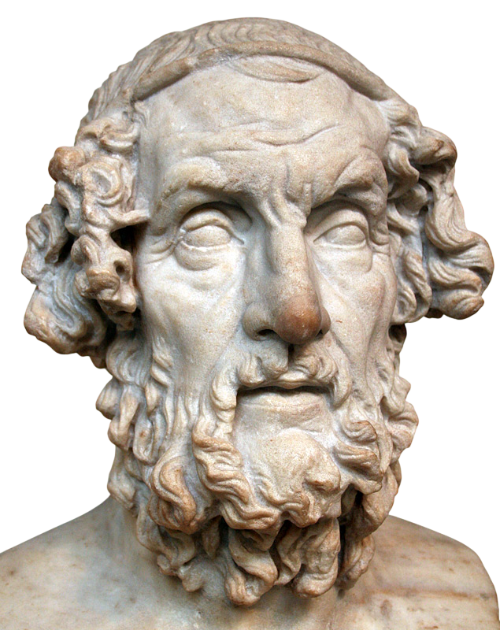
🔍 AmpliarLITERATURA ANTIGUA ➔ LITERATURA CLÁSICA
| LITERATURA ANTIGUA | LITERATURA CLÁSICA |
|---|---|
| La naturaleza se explica a partir de cosmogonías, que relatan la creación y la destrucción del mundo. | La naturaleza se explica a partir de mitos, relatos fabulosos que dan cuenta del origen de las cosas. |
| Predomina una mentalidad religiosa y espiritual, según la cual el hombre adora a los dioses para obtener su favor y evitar su castigo. | Predomina una mentalidad fatalista, según la cual el hombre, mortal, cumple un destino, voluntad de los dioses, inmortales. |
| La vida personal se concibe dentro de una jerarquía, cuya autoridad debe respetarse cumpliendo una serie de preceptos que perfeccionan a la persona. | Honda admiración hacia lo aristocrático: la literatura ensalza a los héroes, personajes con cualidades extraordinarias, dignos de ser imitados. |
| Se rinde culto a las virtudes morales (justicia, piedad, honestidad), base de la dignidad humana. | Se rinde culto a lo bello, lo bueno y lo verdadero, virtudes con las que se logra equilibrio y armonía. |
| La muerte se enfoca desde una perspectiva trascendente: el hombre se purifica en sucesivas reencarnaciones o consigue unirse a la divinidad, alcanzando así la vida eterna. | Superación de la muerte: el tiempo no se concibe desde un punto de vista lineal, sino cíclico, por lo que el mundo se construye sobre el eterno retorno de valores que se pierden y recuperan continuamente. |
| Se desarrolla un pensamiento mágico, que recurre a la fantasía para explicar los fenómenos y al poder espiritual para influir en los acontecimientos. | Se desarrolla el pensamiento científico, filosófico y político, dentro de un espíritu racional, en el que destacan Platón y Aristóteles. |
| Tiene una clara voluntad didáctica, pretende educar en ciertos valores: el respeto a la naturaleza, la amistad, el amor y el buen gobierno. | Combina la voluntad didáctica (prodesse) con el disfrute estético (delectare), aunque estos dos componentes no suelen mezclarse en la misma obra. |
| Se da gran importancia al simbolismo, que permite expresar ideas complejas recurriendo a objetos o a sucesos convencionales. | Se da gran importancia al análisis, que permite comprender la realidad yendo a su esencia, descomponiéndola en ideas claras y distintas. |
| Los géneros literarios más frecuentes son los mitos, las fábulas, los cuentos, los proverbios, las profecías, la historia, los cantos y las oraciones. | Los géneros literarios son variados y originales: épica, tragedia, comedia, lírica, historia, oratoria, nacen en Grecia y pasan a Roma, que crea la sátira. |
| Los valores poéticos dependen de la repetición de ideas y fórmulas gramaticales. | Los valores poéticos dependen del uso de figuras retóricas en todos los niveles de la lengua. |
1.1 CONTEXTO HISTÓRICO: GRECIA
La historia y las letras del mundo clásico se estructuran a lo largo de grandes etapas que abarcan desde el siglo VIII a.C. hasta la caída del Imperio romano en el 476 d.C.:
- Época arcaica (s. VIII - VI a.C.): Homero, Hesíodo, Safo de Lesbos, Esopo; desarrollo de las polis.
- Época clásica (s. V - IV a.C.): Siglo de oro de Atenas (Pericles); auge de la tragedia (Esquilo, Sófocles, Eurípides), comedia (Aristófanes), historia y filosofía (Sócrates, Platón, Aristóteles).
- Época helenística (s. III - I a.C.): Expansión con Alejandro Magno, reinos helenísticos, centro en Alejandría.
- Época romana en Grecia (s. I a.C. - III d.C.): Conquista romana e integración cultural grecolatina.
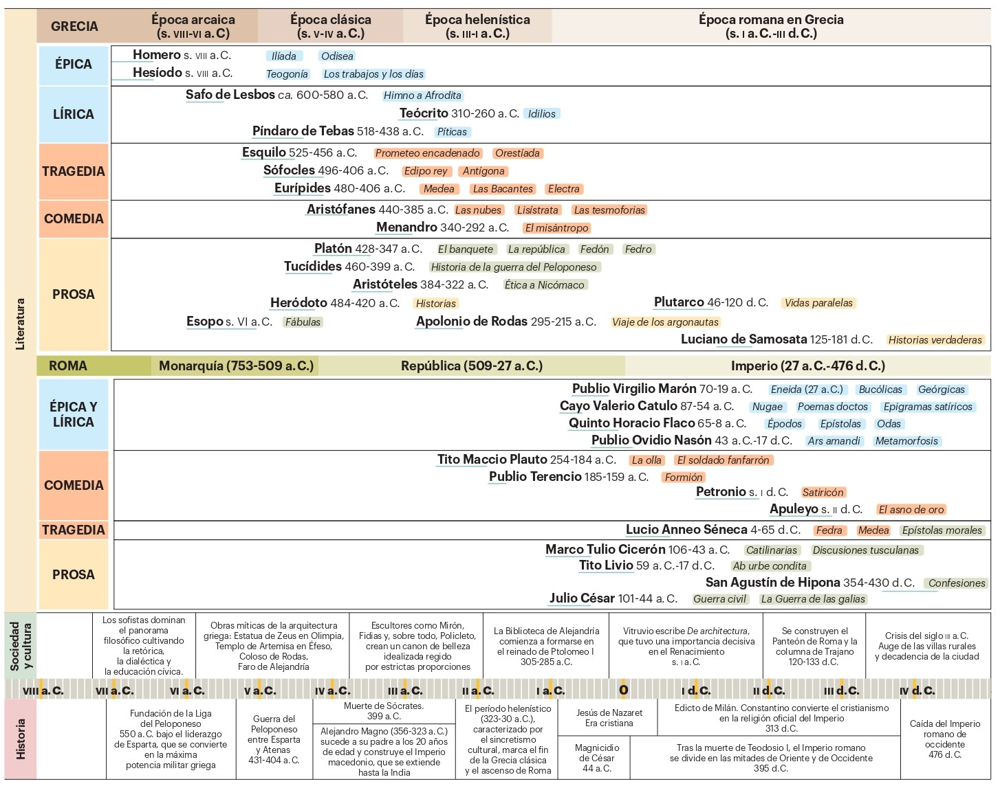
🔍 Ampliar CronologíaLA CIVILIZACIÓN GRIEGA
Grecia ha sido, junto al pueblo hebreo, la cuna de la civilización occidental. Su política, su pensamiento, su arte, su literatura alcanzaron tal perfección y profundidad, que han determinado, en mayor medida que ningún otro pueblo, el desarrollo cultural de Occidente.
Amplitud de fronteras: amplia zona de influencia más allá de la Península del Peloponeso.
Organización del territorio: en polis, ciudades-estado independientes entre sí.
- Atenas (Ática): potencia comercial.
- Esparta (Peloponeso): potencia militar.
- Tebas (Beocia): predominio oligarquía aristocrática.
- Difusión de la cultura: literatura, arte, ciencia...
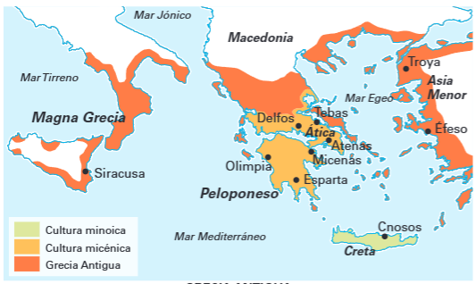
🔍 Ampliar MapaCONFLICTOS HISTÓRICOS Y EXPANSIÓN
Guerras Médicas (490-478 a.C.): lucha contra los persas.
Liga de Delos (478 a.C.): liderada por Atenas.
Pericles (495-429 a.C.): época dorada de Atenas.
Guerra del Peloponeso (431 a.C.): Esparta invade el Ática. Guerra civil, prolongada y cruenta. Enfrentamiento de dos concepciones de la vida.
Batalla de Leuctra (371 a.C.): Tebas se impone a Esparta para conseguir la hegemonía sobre los pueblos griegos.
Filipo II de Macedonia (382-336 a.C.) y Alejandro Magno (356-323 a.C.): expansión del imperio de Alejandro Magno hacia Oriente.
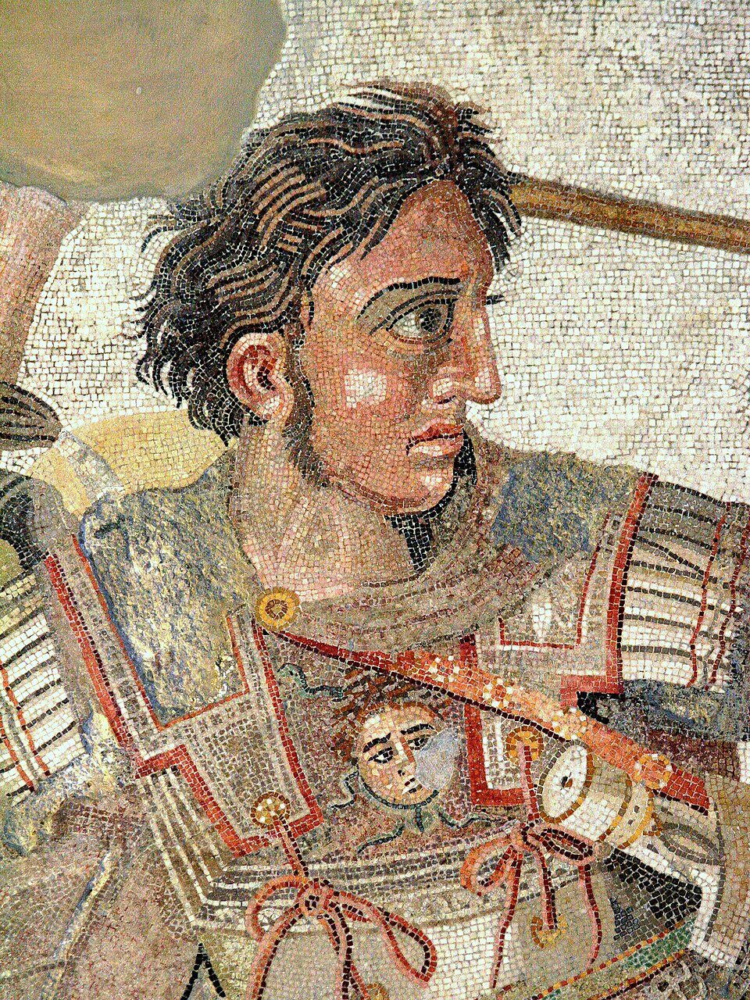
🔍 Ampliar ImagenEL MITO COMO GERMEN DE LA LITERATURA
Los relatos míticos constituyeron la base de la memoria colectiva griega y la fuente nutricia primordial de toda su creación literaria: desde las grandes epopeyas homéricas hasta el teatro trágico y la lírica coral.
A través del mito, el pueblo griego explicó los misterios del cosmos, la condición mortal del ser humano y los conflictos eternos entre la voluntad divina y el destino.
ACTIVIDADES
Trabajo del Libro de Texto
Página 47
Ejercicio nº 1: apartados (a, b, c, d, e).
EL NACIMIENTO DE LA ÉPICA
El más antiguo de los géneros literarios clásicos (junto a la lírica y el drama).
Etimología: Proviene del griego épos, que significa "narración".
Esencia: Es una poesía narrativa que relata las hazañas de héroes del pasado.
¿Qué es? La poesía épica es un relato de las hazañas de los héroes del pasado.
El aedo, un cantor que recopilaba y daba forma a los relatos de la memoria colectiva.
- Sin texto escrito prefijado (debido a que el alfabeto griego no se desarrolló hasta el siglo IX a.C.).
- Improvisa y crea en cada ocasión gracias a su conocimiento de leyendas de su pueblo y fórmulas fijas.
- Acompañaba su canto con una lira ante nobles o en plazas públicas.
Autores: Homero y Hesíodo.
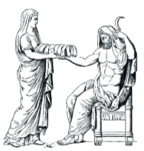
🔍 AmpliarCARACTERÍSTICAS DE LA ÉPICA
- Relata grandes gestas del pasado.
- Aparece asociada a la historia griega.
- La acción se desarrolla en un contexto de guerra, de lucha.
- El protagonista es un héroe que encarna los ideales colectivos de una época.
- Incorpora temas mitológicos; de hecho, es habitual que los dioses intervengan en la acción.
- Utiliza una lengua artificial, que quizá nunca llegó a hablarse, con frecuentes arcaísmos.
- Emplea fórmulas épicas, es decir, expresiones que facilitan al auditorio la comprensión de la historia. Entre ellas, destacan:
- El epíteto épico, expresión fija que se asocia con un personaje.
- Las repeticiones, a veces de versos enteros, para narrar la misma situación.
- Intervención final del narrador, tras las palabras de un personaje.
- Utiliza un solo tipo de verso, que se repite a lo largo de la obra.
HOMERO
Cronología: Se sitúa su existencia en el siglo VIII a. C. (período arcaico de Grecia). Época en la que Grecia sale de su "Época Oscura" y resurge la escritura gracias al alfabeto fenicio.
Origen geográfico: Siete ciudades (entre ellas Esmirna y Quíos) disputaban ser su cuna. La teoría más aceptada es que procedía de Jonia (costa del mar Egeo en Asia Menor), pues sus poemas están en una mezcla dialectal donde predomina el jónico.
La leyenda: La tradición lo describe como un aedo ciego. En griego antiguo, Homeros se asociaba con "el que no ve" o "el que sigue a un guía".
La cuestión homérica: debate histórico sobre si Homero existió o fue un personaje de ficción para agrupar cantos populares. El consenso actual: existió como el último y más brillante eslabón de una larguísima tradición de poesía oral.
Principales obras: La Ilíada y la Odisea. En ellas definió los dos grandes temas de la condición humana: la guerra y el viaje.
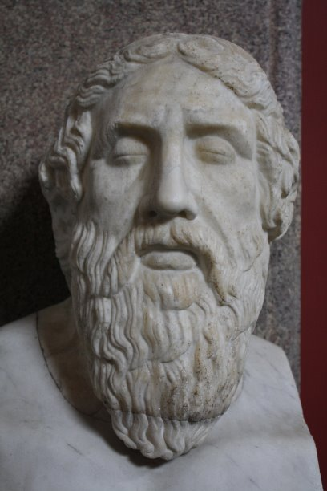
🔍 Ampliar HomeroLA ILÍADA
- Primer poema épico conservado de la literatura griega.
- Traducción: la historia de Ilión (Troya).
- Narra en 24 cantos (15.693 versos) un episodio del décimo año de la guerra de Troya.
- El poeta sitúa la acción en un momento concreto del asedio de Troya por las tropas aqueas o griegas.
- Tema central: la cólera de Aquiles (protagonista de la épica).
- Situación conflictiva previa: Los aqueos (griegos), liderados por Agamenón, y los troyanos ya están en guerra debido al rapto de Helena.
- Detonante (situación inicial): Agamenón arrebata a Aquiles su esclava Briseida. Provoca la ira de Aquiles y su retirada del combate; los griegos son derrotados sucesivamente.
- Nudo: Patroclo, amigo de Aquiles, muere a manos del príncipe troyano Héctor.
- Resolución: Deseoso de venganza, Aquiles se reconcilia con Agamenón, regresa a la lucha y mata a Héctor en duelo.
- Cierre: Concluye con los funerales de Patroclo (campamento aqueo) y de Héctor (Troya).
1.2 GRECIA. LA POESÍA ÉPICA
- Foco en la humanidad. La atención se centra en la humanidad de los guerreros; las descripciones de la época y del entorno quedan en un segundo plano.
- Tensión dramática. El dramatismo se consigue alternando cantos tensos (batallas) con otros distendidos (celebraciones de victoria). Esta tensión asciende progresivamente hasta estallar con la cólera de Aquiles en el canto XXII.
- Descripciones dinámicas. Las descripciones dotan de movimiento tanto a los personajes (ej. la despedida de Héctor y su esposa Andrómaca) como a los objetos (ej. un escudo o una armadura).
-
Recursos estilísticos.
- Epítetos épicos: Expresiones fijas para caracterizar personajes (ej. «Atenea, la de los ojos brillantes», «Andrómaca, la de níveos brazos» o «Aquiles, el de los pies ligeros»).
- Comparaciones activas: Metáforas dinámicas que añaden plasticidad a la narración (ej. «como en el monte el gavilán se abalanza tras la cándida paloma»).
-
El papel de los dioses: Los dioses toman partido de forma activa por uno u otro bando, tienen forma antropomórfica y actúan como informadores (a través de sueños) o colaboradores de sus protegidos:
- A favor de los griegos: Atenea (quien, por ejemplo, impide que Aquiles ataque a Agamenón), Hera, Hefesto, Poseidón, Hermes y Tetis.
- A favor de los troyanos: Afrodita, Apolo (quien vela el cuerpo del troyano caído), Artemisa, Ares y Leto.
ACTIVIDADES
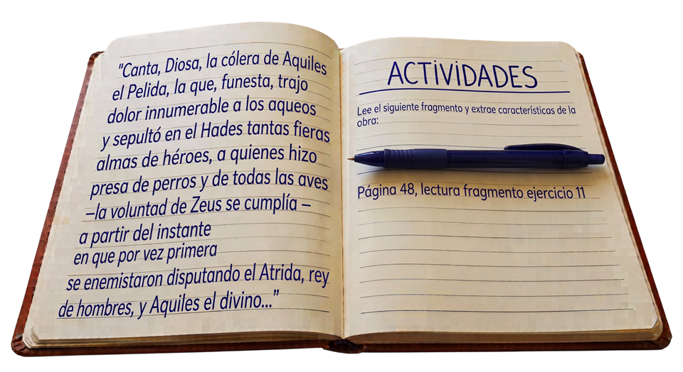
Trabajo sobre la Ilíada
Lee el fragmento inicial de la obra («Canta, Diosa, la cólera de Aquiles...») y extrae las características fundamentales del poema épico.
Página 48: lectura de fragmento del ejercicio 11.
LA ODISEA
Significado: Su nombre significa «la historia de Odiseo», nombre griego de Ulises.
Argumento: Relata en 24 cantos el regreso del héroe a su patria, la isla de Ítaca, tras la guerra de Troya. El viaje dura diez años.
Eje narrativo: Héroe bajo acoso constante de Poseidón (dios marino) y protección de Palas Atenea (la de los ojos brillantes).
- a) La Telemaquia (cantos I-IV): Telémaco, hijo de Ulises —tras invocación y asamblea de dioses— busca noticias de su padre en Pilos y Esparta.
- b) La verdadera Odisea (cantos V-XII): Aventuras marinas del héroe. Vence peligros del mar (Escila, cíclopes) y tentaciones de mujeres que quieren casarse con él (Calipso, maga Circe).
- c) La venganza en Ítaca (cantos XIII-XXIV): Muerte de los pretendientes de su esposa a manos de Ulises y de su hijo.
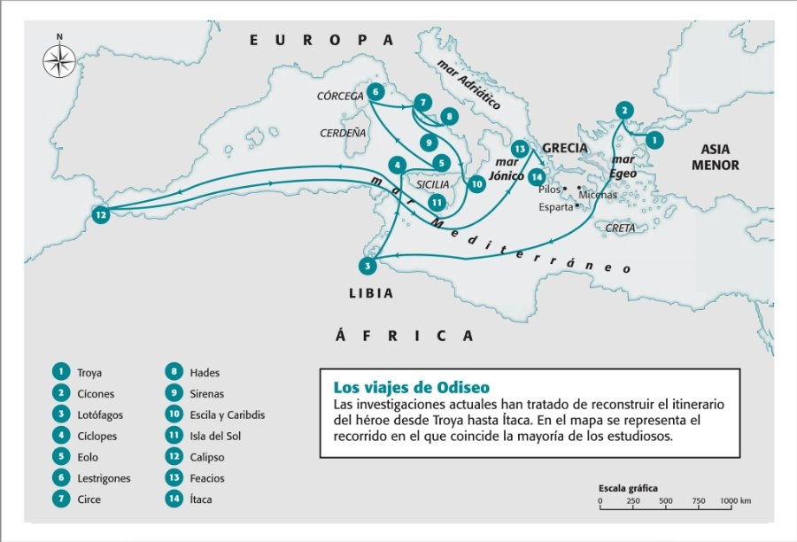
🔍 Ampliar OdiseaEL PERSONAJE DE ULISES Y SU SISTEMA DE VALORES
La obra experimenta una profunda transformación con respecto a la Ilíada:
- Pasa de una lógica militar a un universo pacificado, donde el arte de la palabra es tan importante como el de la guerra.
- El protagonista se muestra «politizado»: es prudente, astuto, versátil e ingenioso.
- Su motivación principal (móvil) es salvarse y regresar a casa, representando un ideal de vida práctico.
- Prefiere la persuasión al enfrentamiento y solo usa la violencia cuando es estrictamente indispensable.
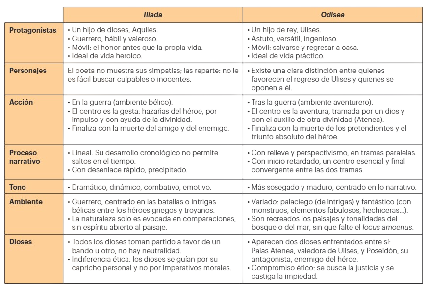
🔍 Ampliar Tabla ComparativaACTIVIDADES
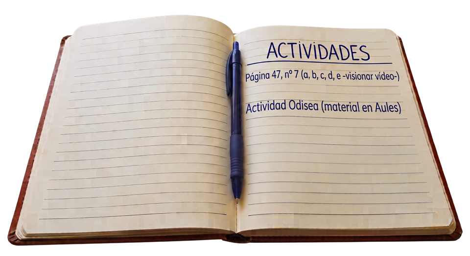
Actividades de la Odisea
Página 47: nº 7 (apartados a, b, c, d, e -visionar vídeo-).
Actividad Odisea: material disponible en la plataforma Aules.
TROYA (2004)
La película Troya (Wolfgang Petersen, 2004) adapta libremente los episodios homéricos de la Ilíada, mostrando la pervivencia universal de sus héroes (Aquiles, Héctor, Agamenón, Odiseo) en la cultura audiovisual del siglo XXI.
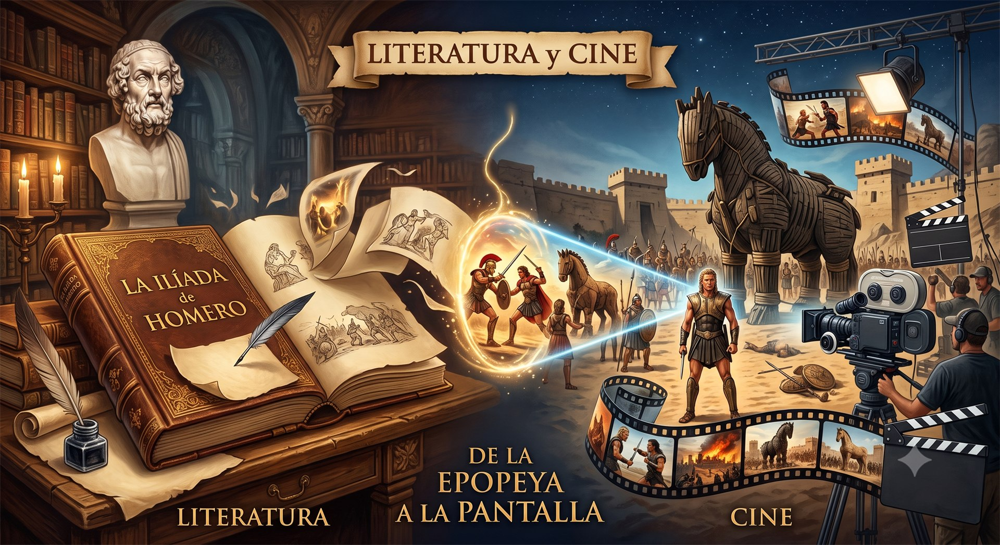
🔍 Ampliar Cartel1.2 GRECIA. LA POESÍA LÍRICA
Los líricos crearon una poesía, que recitaban al son de la lira en las ciudades, en los santuarios o en grandes fiestas, durante las cuales se desarrollaron certámenes poéticos.
- Es una poesía subjetiva y que muestra la vida privada del poeta o de la colectividad.
- Canta hechos del presente, no las glorias pasadas, como los aedos.
- Toca una gran variedad de temas: religiosos, políticos, amorosos, satíricos o existenciales (paso del tiempo, la muerte...).
- Utiliza diferentes formas métricas.
- Se expresa en distintos dialectos (dorio, eolio, jonio), frente a la épica, que se ceñía al dialecto homérico.
- Su ejecución es tanto personal, cantada por un solo poeta o solista, como coral, cantada por un grupo o coro de jóvenes, generalmente en una fiesta, en la que la comunidad se siente protagonista y expresa sus ideas o sentimientos colectivos.
- Safo de Lesbos (alrededor de 600 a.C.) es la poetisa del amor en todas sus vertientes (la pasión, los celos, el desengaño, el abandono).
- En su poesía, sencilla y delicada, describe los tormentos, las ansias o los deseos de los amantes. Así ocurre en el Himno a Afrodita, su única obra completa, en la que ruega a la diosa que, como aliada, venga en su ayuda.
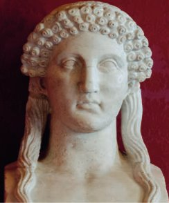
🔍 Ampliar SafoACTIVIDADES
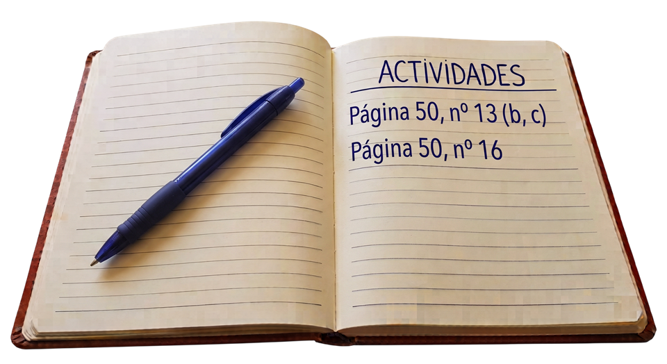
Actividades de Poesía Lírica
Página 50: nº 13 (apartados b, c).
Página 50: nº 16.
1.2 GRECIA. EL TEATRO
- El teatro griego tiene un origen ritual. Nace en el siglo VI a.C. vinculado a las fiestas en honor del dios Dionisos, que se celebraban la última semana del mes de marzo, y en las que se cantaban himnos corales llamados ditirambos.
- A partir del año 534 a.C., las fiestas se transforman en una especie de festival, pagado por los coregos, personas adineradas que abonaban así sus tributos.
- Tres autores presentaban cada uno tres tragedias y un drama satírico. Las cuatro obras podían estar relacionadas por su tema, formando una tetralogía, aunque era frecuente una trilogía de tragedias.
- Las representaciones teatrales se sometían a un concurso, y un jurado, elegido a suertes entre el pueblo, premiaba al dramaturgo, al corego y a los protagonistas.
-
Durante el siglo V a.C., la representación teatral se convierte en un espectáculo total (parecido a una ópera o un musical de la actualidad), puesto en escena por dos grupos de personajes: el coro y los actores.
- El coro, formado por doce miembros llamados coreutas, ocupaba la orquestra. Tomaba parte en la acción cantando y, a veces, también con evoluciones o bailes. Su representante, el corifeo, intervenía de forma recitada y, como portavoz del coro, podía entrar en diálogo con los actores.
- Los actores, dos varones, representaban los papeles de todos los personajes mediante el empleo de variados atuendos y distintas máscaras. Las máscaras, de tela, corcho o madera, con color claro para personajes femeninos y más oscuro para masculinos, servían para caracterizar a los personajes, dotarlos de expresividad y ampliar su voz.
- Las dos formas esenciales del teatro griego eran la tragedia y la comedia.
1.2 GRECIA. EL TEATRO: ARQUITECTURA
- Graderío (theatron): asientos semicirculares en la colina para la audiencia, con acústica excepcional.
- Orquesta (orchestra): espacio circular central donde cantaba y evolucionaba el coro.
- Proscenio (proskenion): plataforma elevada ante la escena donde actuaban los actores.
- Escena (skene): estructura de fondo para decorados, camerinos y cambios de máscara.
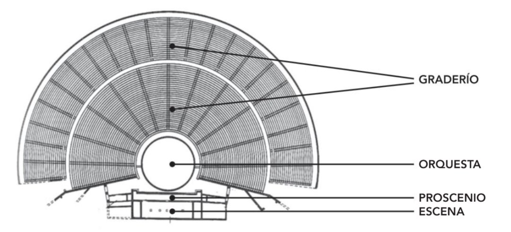
🔍 Ampliar Plano1.2 GRECIA. EL TEATRO: TRAGEDIA vs COMEDIA
| ELEMENTO | TRAGEDIA | COMEDIA |
|---|---|---|
| Temas | Mitología o épica: destino, culpa, castigo divino, conflicto individuo-ciudad o angustia y liberación. | Crítica social, uniendo fantasía y realidad con elementos fijos (alusiones, insultos, chistes o parodias) para la risa o burla. |
| Acción dramática | Sufrimiento por un «conflicto» y termina con la destrucción del protagonista. | Nace en una situación angustiosa que el héroe resuelve felizmente al final de la obra. |
| Personajes | Héroes o dioses que representan el destino, la justicia o las pasiones. | Dioses, figuras reales o personajes creados por el autor como reflejo de la sociedad. |
| Héroe | Sucumbe a un destino funesto por su soberbia (hybris) y ceguera (até), que le llevan a decisiones injustas (hamartía). | Personaje cómico estereotipado: el esclavo ingenioso, el soldado fanfarrón, el joven enamoradizo, el viejo avaro... |
| Ejemplaridad | Identificación con el héroe que provoca en el espectador una catarsis o purificación, liberándolo de pasiones dañinas. | Reflejo de la historia y sociedad: critica los defectos de la época a través de personajes del momento. |
| Lenguaje | Culto y elevado. | Vulgar, incluso obsceno. |
1.2 GRECIA. EL TEATRO: LOS TRES GRANDES TRÁGICOS
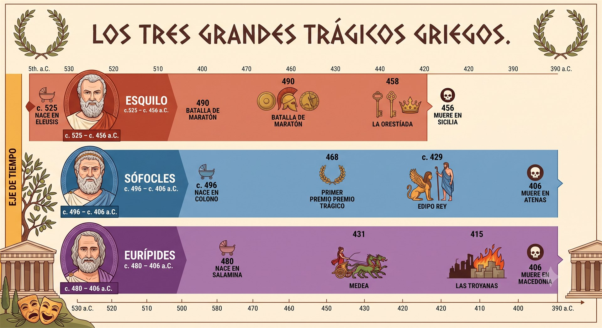
🔍 Ampliar Eje Cronológico1.2 GRECIA. EL TEATRO: ESQUILO Y SÓFOCLES
Esquilo es el creador de la tragedia. Aportó al género sus rasgos esenciales:
- argumentos tomados de la historia o inspirados en los mitos antiguos,
- introducción de un segundo actor al margen del coro;
- creación de la trilogía dramática, desarrollando un mismo tema en tres tragedias, lo que permitió tramas de mayor complejidad;
- y empleo de un lenguaje solemne y de un estilo majestuoso, casi épico.
La gran innovación de Esquilo estriba en la voluntad de realizar un examen de la condición del hombre a partir de la desgracia y el sufrimiento del inocente.
De sus noventa obras se conservan únicamente siete.
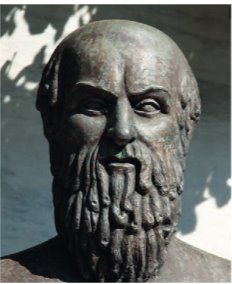
🔍 Esquilo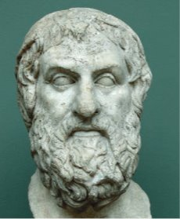
🔍 SófoclesSófocles vive en el momento de esplendor de la Atenas democrática, por eso pone su teatro al servicio de la polis. Su objetivo es educar al pueblo, para que sea consciente de la necesidad de actuar moralmente, de acuerdo con las normas establecidas. Su pensamiento se basa en los siguientes principios:
1.2 GRECIA. EL TEATRO: SÓFOCLES
- Existen dos esferas o dos mundos: la de los dioses y la de los hombres.
- La naturaleza humana se caracteriza por el sufrimiento y la posibilidad de error, razón por la que ha de someterse al designio infalible de los dioses.
- De igual manera, la polis ha de ceñirse a la ley divina; cuando un gobernante no respeta el orden establecido, causa la desgracia del pueblo.
Apoyándose en estos planteamientos, Sófocles crea una obra dramática innovadora:
- Introduce el tercer actor (antes solo podía haber dos actores en escena), con lo que la obra gana dinamismo y teatralidad.
- Ofrece diálogos más vivos para mantener el interés del espectador.
- Incrementa el protagonismo de los actores y se lo resta al coro, que se limita a comentar las escenas, con el fin de dinamizar la acción dramática.
- Mejora la técnica teatral con vestuario y decorados específicos para cada obra.
- Ofrece un profundo análisis psicológico de los personajes, en particular de los femeninos.
- Utiliza la ironía. Para ello, hace que el conflicto se resuelva con una revelación sorprendente, que cambia la perspectiva con la que el protagonista enfocaba su situación.
Escribió más de ciento treinta tragedias, de las que se conservan siete. De entre ellas destacan Edipo rey, Electra y Antígona.
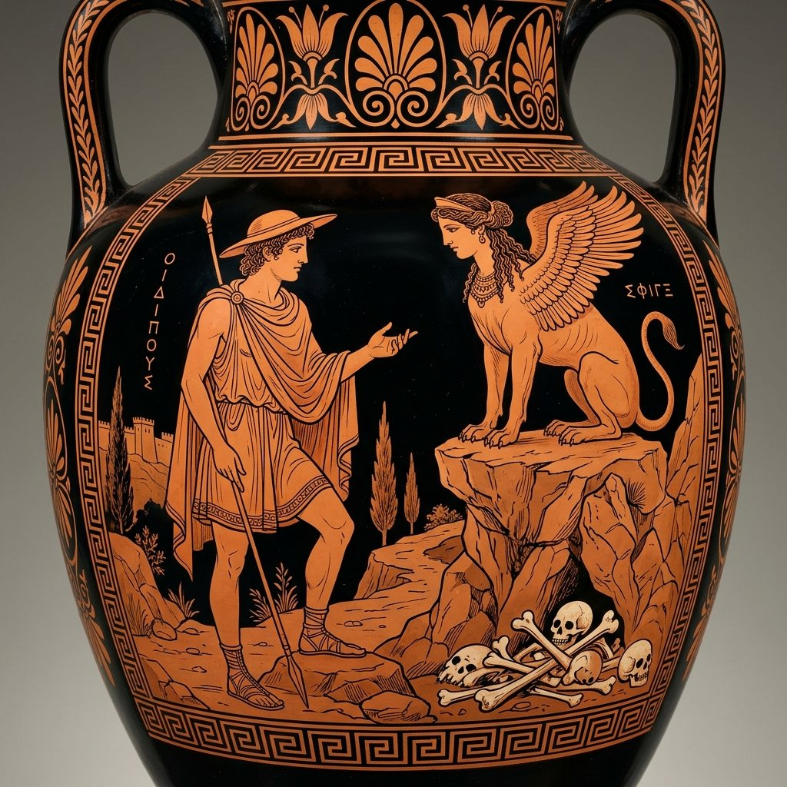
🔍 Edipo y la Esfinge (Sófocles)1.2 GRECIA. EL TEATRO: EURÍPIDES (480-406 a.C.)
Este autor se alejó de los principios ideológicos de sus predecesores para ocuparse de los problemas morales que se plantean en la vida cotidiana. No le interesan los conflictos a los que se enfrentan los grandes héroes, sino el destino del hombre concreto, acercándose a personajes humildes, como las mujeres o los esclavos. Es decir, mientras Sófocles presenta al hombre como debe ser, Eurípides lo muestra como es y sus personajes describen sus desgracias con un lenguaje contemporáneo, en términos humanos. Tal vez por ello sus representaciones no fueron tan del agrado del público de su época, más partidario de Sófocles.
Sus obras, cerca de noventa, de las que conservamos dieciocho enteras, tuvieron gran influencia en la literatura latina.
La tragedia se desata por el orgullo y la soberbia del protagonista, que rebasa los límites de su condición humana. Su ceguera moral le impulsa al error, que trae consigo la desgracia y el castigo fatal de los dioses: la sangre derramada se vuelve contra los derramadores, el tirano es sometido, el impío atropellado y la fría razón sucumbe ante la locura. Así ocurre por ejemplo en Medea.
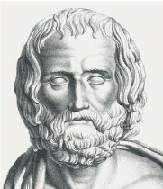
🔍 Ampliar EurípidesACTIVIDADES
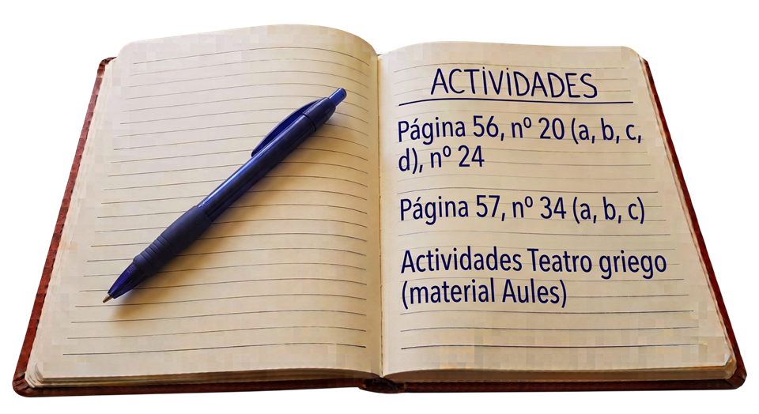
Actividades de Teatro Griego
Página 56: nº 20 (a, b, c, d), nº 24.
Página 57: nº 34 (a, b, c).
Actividades Teatro griego: material en Aules.
1.2 GRECIA. LA PROSA
Los tres grandes géneros de la literatura griega clásica (épica, lírica y drama) utilizan el verso, ya que aparecen vinculados al canto y a la recitación.
La prosa surge de la mano de géneros que suman a su vertiente estética la función didáctica.
La creación de la fábula se atribuye a Esopo (s. VI a.C.). Como es sabido, se trata de relatos breves, protagonizados por animales dotados de capacidades humanas, de los que se desprende una enseñanza moral que se recoge al final del relato a modo de conclusión.
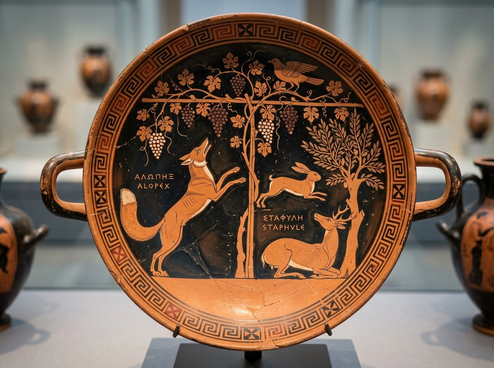
Hipócrates (s. V a.C.), el padre de la medicina, redactó numerosos escritos (De la dieta, De las epidemias, Pronósticos, Aforismos), en los que describe la enfermedad como un desequilibrio entre los cuatro humores fundamentales: sangre, flema, bilis amarilla y bilis negra. Además, fundó una ética y una moral médicas, recogidas en el famoso Juramento hipocrático.
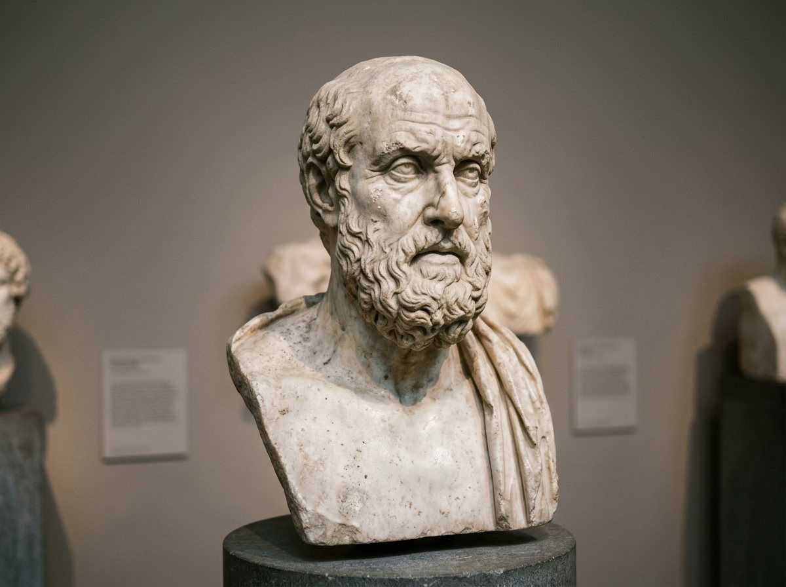
Heródoto (484-420 a.C.) da cuenta de las guerras médicas entre griegos y persas en su obra Historias, en la que recoge el testimonio oral de los supervivientes.
Tucídides (460-399 a.C.) escribió la Historia de la guerra del Peloponeso, que libraron espartanos y atenienses. Trata de ofrecer distintas perspectivas incorporando discursos de personajes históricos implicados en los hechos.
Jenofonte (430-355 a.C.) es autor de la Anábasis, que cuenta la expedición de los griegos a tierras persas en auxilio del rey Ciro y su retirada.
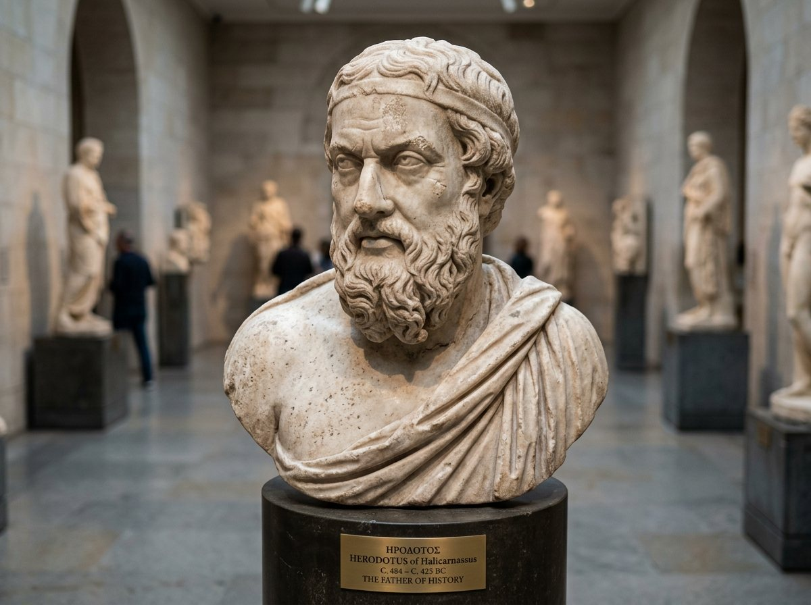
1.2 GRECIA. LA PROSA: FILOSOFÍA
No es autor de ningún tratado, sino de un método: la mayéutica, basado en preguntas y diálogo. «Solo sé que no sé nada». Su propósito no es definir la verdad sino estimular hacia su búsqueda por el debate.
Discípulo de Sócrates, autor de veinticuatro diálogos en los que analiza la sociedad y la política (República, Leyes), la naturaleza espiritual del hombre (Fedón, Fedro) o el amor (El banquete).
Crea un sistema filosófico propio que integra la reflexión sobre la naturaleza de la realidad (Física), la moral (Ética a Nicómaco) y la estética (Poética).
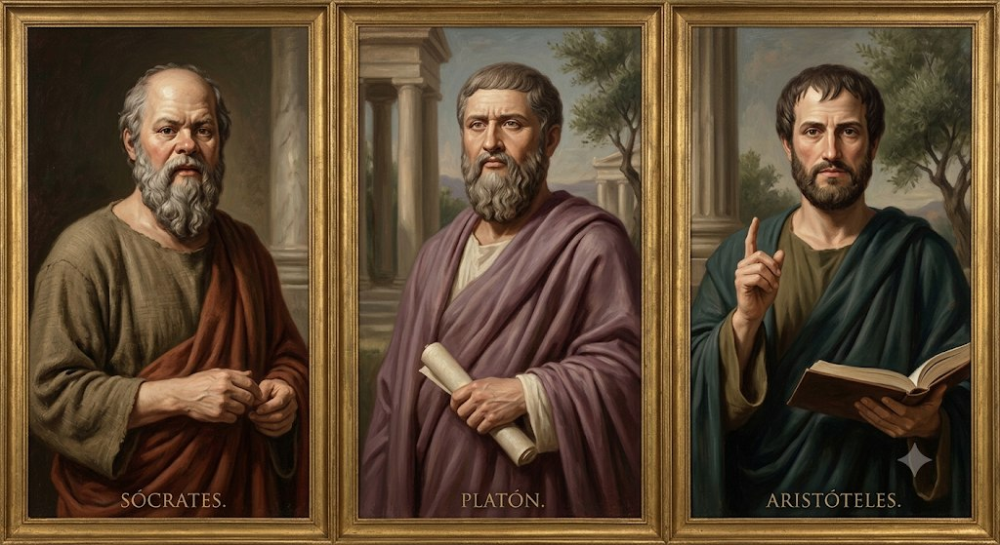
🔍 Ampliar ImagenACTIVIDADES
Actividades de Prosa Griega
Página 59: nº 40 (enunciado modificado).
Página 59: nº 43.
1.3 CONTEXTO HISTÓRICO (ROMA)
- Fundación de Roma → 753 a.C.
- S. III a.C. → dominio de la península Itálica.
- S. II a.C. → Ocupación de las regiones que bordeaban el Mediterráneo (Mare Nostrum)
- Guerras Púnicas (264-146 a.C.) → destrucción de Cartago.
- S. I a.C. → Conquista de Occidente, parte del centro de Europa y el Asia Menor > Imperio romano.
Los romanos eran conscientes de que su prosperidad descansaba sobre dos pilares:
- una administración centralizada
- prevalencia del Derecho romano
- y la unidad cultural:
- compleja red de calzadas
- imposición del latín
La organización política y social de Roma se prolongó hasta el año 476 d.C., cuando los pueblos bárbaros provocaron la caída del Imperio. No obstante, su prestigio siguió gravitando sobre Europa, cuyas naciones asumieron su cultura y sus valores.
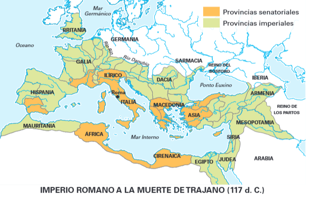
🔍 Ampliar Mapa1.3 CONTEXTO HISTÓRICO (ROMA): ÉPOCAS LITERARIAS
La historia del Imperio Romano se divide tradicionalmente en tres grandes periodos:
- la Monarquía Romana (753-509 a.C.)
- la República Romana (509-27 a.C.)
- y el Imperio Romano (27 a.C. - 476 d.C.).
Teniendo en cuenta que, del periodo de la Monarquía romana, previo a los siguientes, no se conservan manifestaciones escritas, distinguimos tres épocas literarias:
- Republicana (s. III-I a.C.): imitación de la literatura griega, que tenía una mayor tradición y gran prestigio.
- Imperial (s. I-III d.C.): periodo de mayor esplendor caracterizado por una gran perfección técnica y cierta pérdida de libertad creadora.
- Paleocristiana (s. IV-V d.C.): marcada por la inclusión de contenidos religiosos.
Tras la desaparición del Imperio romano, el latín continuará siendo la lengua culta por excelencia hasta el final de la Edad Media (s. XV).
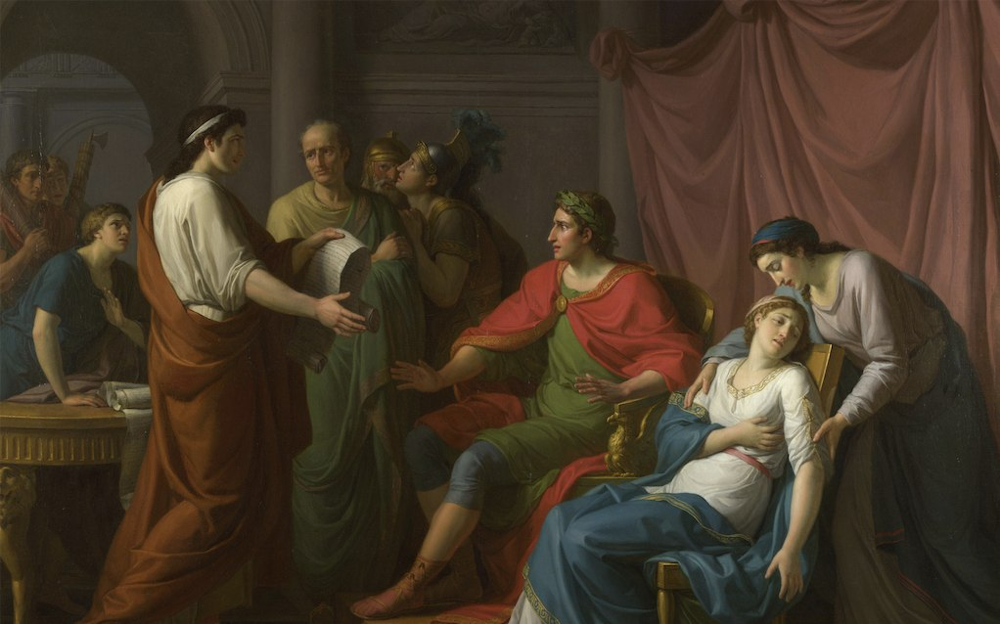
🔍 Ampliar Imagen1.4 ROMA. LA POESÍA ÉPICA
Primer poema épico: Odussia (traducción de la Odisea) por Livio Andrónico.
- Fase de imitación: Nevio con Bellum Poenicum (guerras púnicas y Eneas); Ennio con los Anales (adopta el verso hexámetro definitivo).
- Época clásica: cumbre con la Eneida de Virgilio, epopeya nacional y origen divino de Roma.
- Decadencia retórica: Farsalia del cordobés Lucano (guerra civil César vs Pompeyo).
Epopeya nacional y obra cumbre de la épica latina. Cuenta el origen mítico de Roma atribuido a Eneas, héroe troyano que huye de Troya y llega al Lacio.
Consta de XII libros con más de 12.000 versos. Publio Virgilio Marón (70-19 a.C.) la compuso entre 29 y 19 a.C. bajo protección de Augusto.
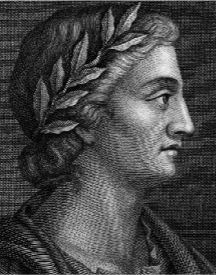
🔍 Ampliar Imagen1.4 ROMA. LA POESÍA ÉPICA: LA ENEIDA
OBJETIVOS
- Por un lado, tiene un fondo histórico: se persigue la glorificación de Roma mediante la exaltación de sus valores y conquistas.
- En segundo lugar, tiene un valor político, pues la epopeya exalta la figura de Augusto (subrayando su faceta humana y presentándolo como príncipe de la paz), su familia y otros personajes ilustres (el idilio entre Eneas y la reina Dido es trasunto del que mantuvieron Marco Antonio y Cleopatra).
- Sin embargo, lo que convierte la Eneida en una obra universal es su emoción, su calidez y su humanidad, con escenas inolvidables: la muerte del anciano Príamo, que se viste con sus enmohecidas armas para defender Troya; la dramática salida de Eneas cargando con su anciano padre Anquises y la pérdida de su esposa, etc.
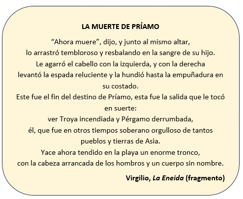
🔍 Clic para ampliar textoESTRUCTURA ARGUMENTAL
- Viaje hasta Italia (libros I-VI): narra los viajes de Eneas y sus peripecias hasta llegar a Italia (que nos recuerdan a la Odisea). Uno de los episodios más destacado es la historia de amor con la reina Dido de Cartago y la profecía de la Sibila, que une el destino del protagonista al origen de la grandeza de Roma.
- Conquista de la nueva patria (libros VII-XII): cuenta las guerras de Eneas en suelo itálico (reflejo de la Ilíada).
Es importante destacar que la Eneida tiene una intención patriótica y propagandística y que fue compuesta por Virgilio a petición de Augusto, primer emperador romano, que quería emparentarse con los dioses y justificar así el poder divino del emperador.
ACTIVIDADES
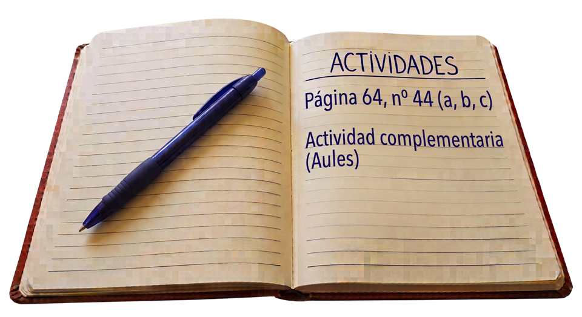
Actividades de Épica Latina
Página 64: nº 44 (apartados a, b, c).
Actividad complementaria: material en Aules.
1.4 ROMA. LA POESÍA LÍRICA
Los orígenes de la poesía lírica latina son poco conocidos. Es a partir del siglo I a.C. cuando se tiene constancia de los primeros autores líricos, entre los que se pueden distinguir dos tendencias:
- a) Poesía arcaizante: arraigada a la tradición literaria romana, esta tendencia es representada por Lucrecio, autor del poema didáctico De la naturaleza. Su estilo es bastante austero en cuanto a recursos formales.
- b) Poetas nuevos: se trata de una poesía inspirada en los modelos griegos, innovadora y muy elaborada desde el punto de vista estilístico. El autor más destacado de los poetae novi fue Catulo.
Con la desaparición de la República (27 a.C.) y el advenimiento del Imperio de Augusto, la poesía latina experimentó su periodo de máximo esplendor. Los poetas disfrutaron del favor tanto del emperador como de otros ricos protectores, como Mecenas, que fomentaron económicamente la creación de círculos literarios. En este ambiente protegido y bien remunerado se produjeron las mejores creaciones de la lírica latina, con las obras de Virgilio, Horacio y Ovidio. Estos autores, que supieron adoptar los mejores logros tanto de los moldes griegos como de los "poetas nuevos", ejercieron una influencia fundamental en la literatura de épocas posteriores.
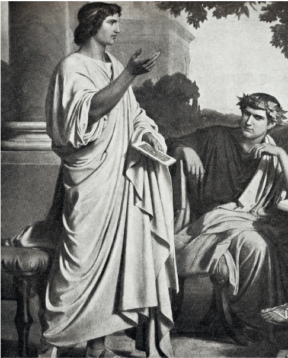
🔍 Ampliar imagen1.4 ROMA. LA POESÍA LÍRICA
Cayo Valerio Catulo es el principal representante de la lírica amorosa. La musa que le inspira es la hermosa Clodia, una dama romana de vida poco ejemplar a la que cantó bajo el nombre de Lesbia.
Su obra abarca ciento dieciséis poemas, dividido en tres partes: bagatelas, poemas doctos y epigramas satíricos, en los que trata temas de la vida cotidiana y de la mitología.
La poesía de Catulo ofrece dos novedades:
- Una mezcla de elementos cultos y populares, con un abundante uso de diminutivos.
- Una presentación innovadora del amor, pues, frente a la tradición romana que solo admitía como elementos de creación la piedad filial, los deberes de los esposos y el respeto mutuo, pero ocultaba el amor carnal como inconfesable, surgen ahora la pasión amorosa, el deseo o la satisfacción como lazos de unión poética entre dos personas.
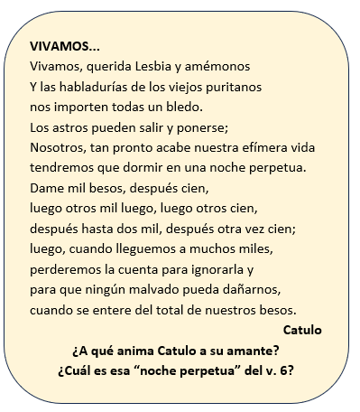
🔍 Ampliar poema1.4 ROMA. LA POESÍA LÍRICA
Los poemas de Publio Ovidio Nasón están marcados por su etapa de destierro, en el año 8 a.C. por orden del emperador Augusto.
En su juventud escribe tres obras:
- Los amores, tres libros dirigidos a una imaginada amada Corina.
- Las heroidas, diecisiete cartas de amor de heroínas mitológicas a sus maridos o amantes.
- Ars amandi, un tratado didáctico de estrategias amorosas dirigidas a los hombres para aleccionarles sobre la manera de conquistar y retener el favor de las mujeres (en dos libros), y un tercer libro dirigido a las mujeres en el que se les da consejos sobre el arte de seducir a los hombres. Se trata de una obra que escandalizó en su época, pero que fue muy leída e imitada en la Edad Media.
Frente a esos poemas amorosos, la época del destierro se muestra en Tristezas, obra de versos sinceros y profundos, donde expresa su amargura y su dolor, e intenta justificar errores pasados.
Su gran obra es las Metamorfosis, un tratado didáctico de mitología con una enorme influencia en la cultura occidental, ya que ha sido una fuente de continua inspiración para escritores, pintores, escultores y músicos. En él, Ovidio organiza materiales mitológicos variados, que se ligan por el fenómeno común de la metamorfosis, esto es, de la transformación física en otro ser. La variedad de historias es inmensa y, por ello, posee la obra un cierto carácter enciclopédico.
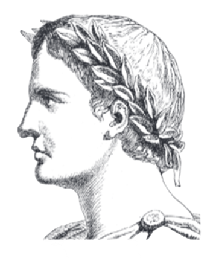
🔍 Ampliar imagenACTIVIDADES
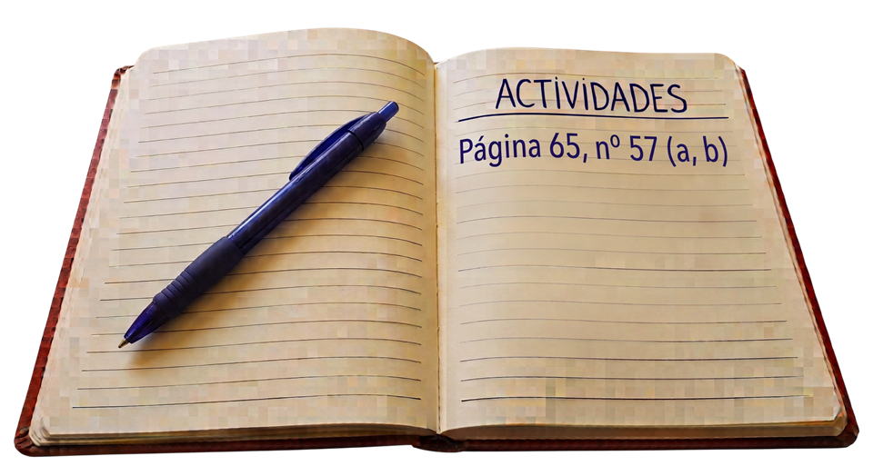
Actividades de Lírica Romana
Página 65: nº 57 (apartados a, b).
1.4 ROMA. EL TEATRO LATINO
Las primeras manifestaciones de teatro popular, no escrito, están ligadas a la recogida de las cosechas y a fiestas campesinas en honor a la diosa Ceres. Consistían en diálogos en verso en tono de farsa, con tipos fijos como el fanfarrón, el pedante, el viejo ridículo, el tonto o el glotón, cuya evolución se puede seguir a lo largo de los siglos hasta llegar a la Commedia dell'Arte italiana del siglo XVI.
Los principales autores de comedia son Plauto y Terencio.
- Estilo y lenguaje: Buscaba el humor a través de la exageración y la caricatura, recurriendo al latín vulgar (sermo vulgaris) para conectar con el público popular.
- Trama habitual: Parejas de jóvenes enamorados que logran superar sus obstáculos con la ayuda de un esclavo astuto.
- Personajes: Utilizaba tipos fijos fácilmente reconocibles por el público:
- Simpáticos: Los jóvenes y el esclavo.
- Antipáticos: El anciano tacaño, el soldado bravucón y el mercader codicioso.
- Crítica social: Al hacer que los personajes antipáticos terminaran burlados o apaleados, ejercía una crítica hacia las clases acomodadas.
- Obra: Escribió unas cien comedias, de las que se conservan alrededor de veinte.
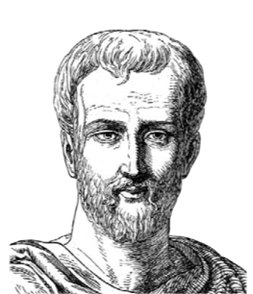
🔍 Ampliar imagen1.4 ROMA. EL TEATRO LATINO
- Estilo y lenguaje: Escribía para un público culto (romanos cultos), empleando un latín cuidado (sermo nobilis) y ofreciendo un teatro más refinado, reflexivo y moralizante.
- Trama y personajes: Aunque abordaba temas similares a los de Plauto, dotaba a sus personajes de una mayor profundidad psicológica.
- Obra: Se conservan seis de sus comedias.
En cuanto a la tragedia latina, tiene un desarrollo tardío. La época arcaica (S.VI-I a.C.), se limita a adaptar tragedias griegas.
Ya en época imperial, el cordobés LUCIO ANNEO SÉNECA (4-65 D.C.), escribe nueve tragedias originales, entre las que destacan Fedra, Medea y Edipo, de contenido filosófico, más para la lectura que para su representación, las cuales tuvieron una notable influencia en el teatro inglés y en dramaturgos modernos. A diferencia de la tragedia griega, cuyo héroe lucha contra un destino inexorable que acaba destruyéndolo, Séneca se centra en el dolor que causa el ser humano cuando actúa mal. Teniendo en cuenta que escribió sus obras mientras era preceptor y ministro puede que las escribiera para educar moral y políticamente, a este excéntrico emperador, que adoraba el teatro.
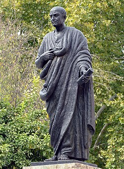
🔍 Ampliar imagen1.4 ROMA. LA PROSA LATINA
Los géneros en prosa más importantes son la historia, la oratoria, el pensamiento y la novela.
En Roma, el género histórico supera el ámbito literario para internarse en el político y propagandístico. Las campañas militares, las decisiones de gobierno y la agitación social se apoyaban en él. La selección de los hechos, así como su presentación y valoración, tienen como objetivo influir en la opinión del lector.
- Julio César (101-44 a.C.), autor de Comentarios a la guerra civil y Comentarios a la guerra de las Galias, una autobiografía redactada en tercera persona en la que defiende las decisiones que tomó en estos dos conflictos.
- Salustio (87-35 a.C.), cuyas obras, La conjuración de Catilina y La guerra de Yugurta, se caracterizan por su intención moralizante y el análisis psicológico de los protagonistas.
- Tito Livio (59 a.C.-17 d.C.), autor de la patriótica y monumental Ab urbe condita (Historia de Roma desde su fundación), compuesta de 142 libros.
- Tácito (55-120 d.C.), que recoge con rigor la historia del siglo I en dos obras fragmentarias, Anales e Historia.
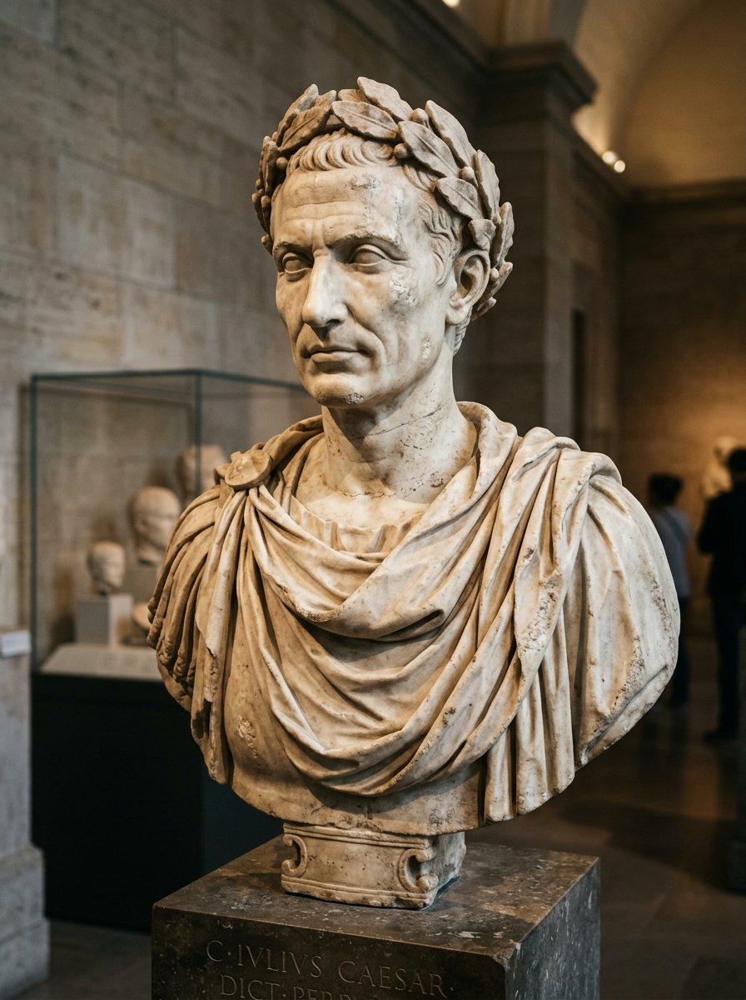
🔍 Ampliar imagenACTIVIDADES
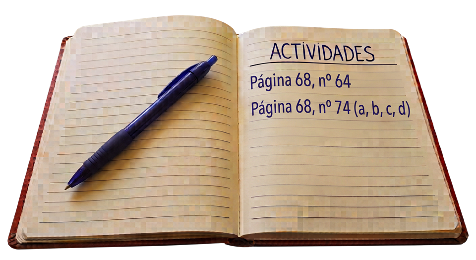
Actividades de Prosa Latina
Página 68: nº 64.
Página 68: nº 74 (apartados a, b, c, d).
🎉 ¡Enhorabuena! Has completado la Unidad 1: Literatura Clásica.